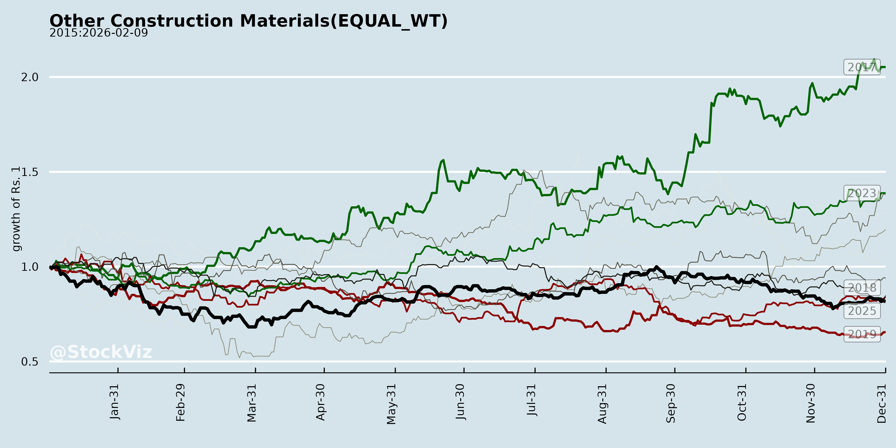
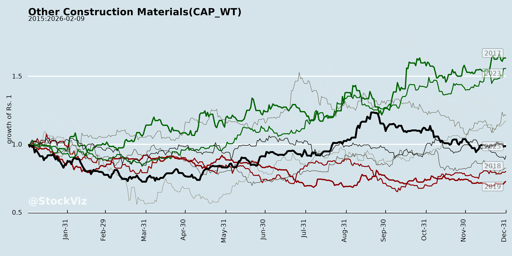
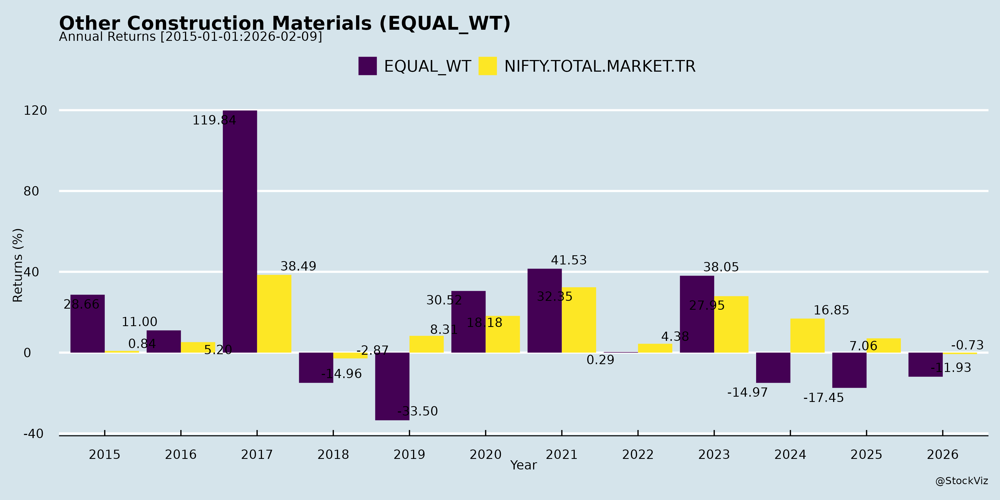
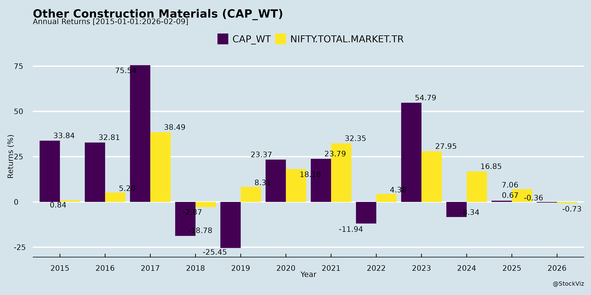
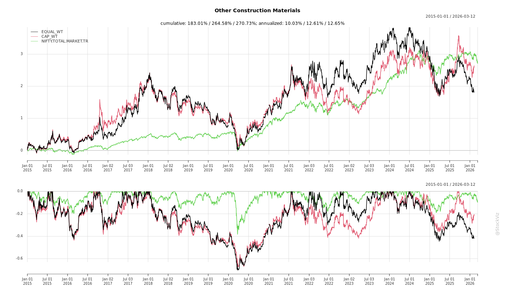
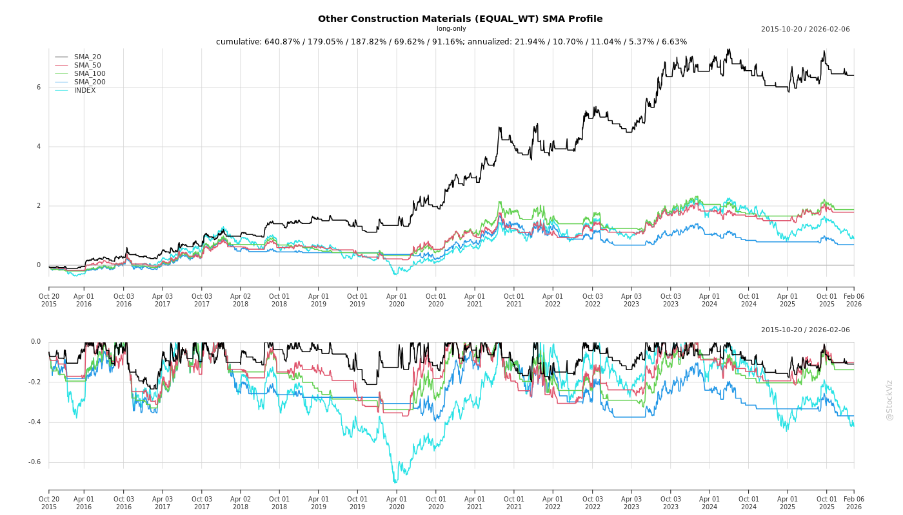
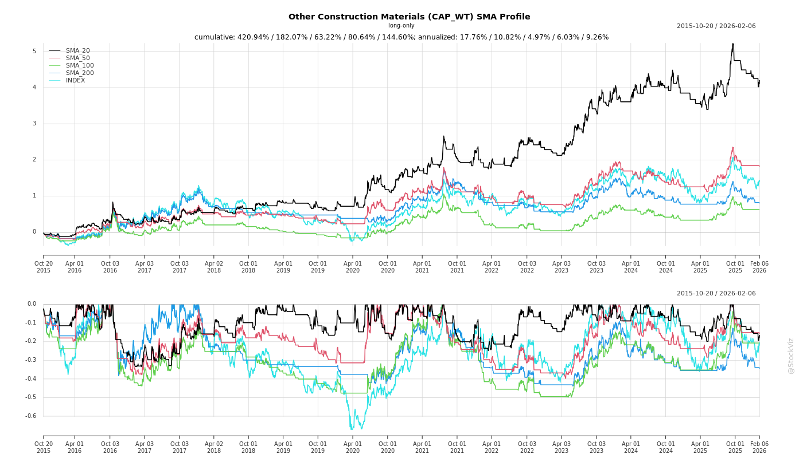

Annual Returns




Cumulative Returns and Drawdowns

SMA Scenarios


Current Distance from SMA
EBIT (% of Industry Total)
Revenue (% of Industry Total)
AI Summaries
Analyst
asof: 2025-11-30
Summary Analysis: Indian Other Construction Materials Sector
(Based on inputs from ArisInfra Solutions Ltd, Everest Industries Ltd, and Sahyadri Industries Ltd documents, focusing on asbestos-based roofing and related products. Sahyadri’s Q1 FY’26 earnings transcript provides the most detailed sector insights; others indicate ongoing investor engagement.)
Headwinds
- Input Cost Pressures & Supply Chain Issues: Elevated costs for imported asbestos fiber, compounded by geopolitical instability, supply disruptions, high freight charges, and INR depreciation. Limited pass-through to price-sensitive rural consumers erodes margins.
- Demand Volatility: Subdued roofing demand due to early monsoons (e.g., May impact on Sahyadri sales) and pricing pressures; total income flat/declining YoY (Sahyadri: ₹216 Cr, -0.8% YoY).
- Margin Compression: EBITDA margins declined (Sahyadri: 10.1% vs. 11.4% YoY); PAT margins at 5% (-13.8% YoY). Sector-wide operating pressures from cost volatility.
- Execution Delays: Capacity expansions hindered (e.g., Sahyadri’s Palghar facility delayed to Q4 FY’27 due to land acquisition hurdles).
Tailwinds
- Operational Resilience: Capacity utilization improved (Sahyadri: 93% vs. 89% YoY); stable income QoQ (+41.6%) signals recovery momentum.
- Investor Interest: Scheduled in-person/group meetings (ArisInfra with Equinox Capital on Nov 26, 2025; Everest with Nidara Capital/One-Up on Feb 17, 2025) reflect sustained engagement, with discussions limited to public info (no UPSI).
- Stabilizing Factors: RM prices largely stable; diversification of sourcing underway.
Growth Prospects
- FY’26 Outlook: Sahyadri guides 8-10% topline growth, with margin recovery via cost optimization, pricing adjustments, good monsoons, and sustained rural housing/infra demand. Non-roofing products resilient.
- Product Diversification: Non-asbestos (fireproof/waterproof) lines poised for “big leap,” potentially doubling share in 3-4 years.
- Capacity Expansion: Sahyadri’s ₹100 Cr Palghar project (₹50 Cr spent) to add ₹125 Cr topline upon commissioning. Broader sector benefits from India’s infra/rural housing push.
- Overall: Path to recovery with stabilizing chains and demand revival; EBITDA/PAT up QoQ (Sahyadri: +56.7%/+152.2%).
Key Risks
- External Shocks: Geopolitical events, forex volatility (USD-INR), and unpredictable RM pricing (e.g., 1% fluctuations).
- Weather & Demand: Monsoon variability and rural price sensitivity could cap volumes.
- Execution: Land/procurement delays in expansions; competition in pricing.
- Regulatory/Compliance: Adherence to SEBI LODR (e.g., disclosures on meetings/transcripts); potential shifts in asbestos regulations.
- Macro: Global trade disruptions persisting into FY’26.
Sector Verdict: Near-term challenged by costs/weather but FY’26 recovery likely (modest topline/margin expansion). Long-term positive on infra demand and diversification; monitor forex and expansions closely. All discussions emphasize public info only.
Financial
asof: 2025-11-30
Summary Analysis: Indian Other Construction Materials Sector
(Based on Q3 & 9M FY25 financial results of key players: Ramco Industries Ltd., Everest Industries Ltd., and Sahyadri Industries Ltd. – focused on fiber cement boards, roofing sheets, non-asbestos boards, and steel buildings. Sector revenue mix: ~80-90% from Building Products. All figures in ₹ lakhs unless stated; analysis reflects unaudited standalone/consolidated results as of Dec 31, 2024.)
Overall Sector Snapshot
- Mixed Performance: Aggregate 9M revenue growth ~5-10% YoY (Ramco +6%, Everest +9%, Sahyadri -6%). Profits volatile: Ramco strong (+37% 9M standalone PAT), Everest near-breakeven post-exceptional gain (property sale ₹384L), Sahyadri down (-31% PAT).
- Key Drivers: Infra/housing demand supports volumes, but margins squeezed (EBITDA margins 4-8% vs. 6-10% prior). Building Products dominant (70-85% revenue), with Steel Buildings (Everest) as growth pocket.
- Macro Context: India’s construction sector benefits from ₹11L Cr Budget infra spend, PMAY housing, but faces cyclical slowdowns.
Headwinds (Negative Pressures)
- Revenue Volatility & Declines: Q3 sales dips (Everest -13% YoY, Sahyadri -4%, Ramco flat). Inventory build-ups signal weak demand (e.g., Everest’s (₹966L) 9M inventory decrease reflects overstocking earlier).
- Margin Compression: Raw material costs up 10-15% YoY (e.g., Ramco materials ₹59kL vs. ₹54kL; Everest ₹76kL vs. ₹66kL). Employee costs +8-15%, other expenses +10-20%. Finance costs elevated (Everest +80%, Sahyadri steady but high at 4% of sales).
- Loss-Making Quarters: Everest standalone/consolidated losses in Q2/Q3 FY25 (₹1.2kL-₹1.5kL PAT loss), dragged by Steel Buildings turnaround costs and unallocable expenses (₹1.8kL/Q3).
- Segment Weakness: Building Products softening (Everest -4% 9M; Sahyadri power gen volatile). Regional slowdowns (e.g., Noida property sale by Everest indicates idle assets).
Tailwinds (Positive Factors)
- Selective Revenue Growth: Ramco Building Products +14% Q3 (₹22kL), 9M +17%; Everest Steel Buildings +50% 9M (₹45kL). Total ops income up (Ramco consol ₹1.24L Cr 9M).
- Profitability in Leaders: Ramco 9M PAT +37% standalone (₹7.5kL), boosted by OCI gains (₹3.7kL equity instruments). Sahyadri steady EBITDA (~5%).
- Exceptional Gains & Efficiency: Everest’s ₹384L property sale offsets losses; Ramco’s unallocable income (₹5.7kL 9M) aids PBT.
- Cost Controls: Finance costs down YoY (Ramco -38%, Sahyadri -38%). Inventory adjustments positive in Q3 (e.g., Everest -₹3kL).
Growth Prospects (Medium-Term Outlook: Positive, 10-15% CAGR)
- Infra/Housing Boom: ₹10L+ Cr govt capex (roads, railways, PMAY 4.2 Cr houses) to drive roofing/boards demand. Ramco’s fiber cement (82kL 9M revenue) well-positioned.
- Capacity Expansions:
- Sahyadri: New Odisha asbestos plant (1.2L MT); Maharashtra non-asbestos boards (72k MT).
- Ramco: Intl subsidiaries (Sri Lanka) adding ₹8kL+ consol revenue.
- Everest: Steel buildings scaling (44kL 9M, +53% YoY).
- Diversification: Ramco’s windmills (stable ₹1.4kL 9M); Everest’s intl subs (Mauritius/UAE). Export potential via forex reserves.
- Margin Recovery: Falling input costs (fly ash/coal stabilization) + pricing power could lift EBITDA to 10-12%. Associates boost Ramco consol EPS (₹16.77 9M).
Key Risks
| Commodity Price Volatility |
Raw materials (cement, fly ash) up 10-20%; forex for imports. |
High (e.g., Everest materials 60% of costs) |
Hedging, backward integration (Ramco). |
| Demand Cyclicality |
Real estate slowdown; monsoon/rural weakness. |
High (Q3 dips across firms) |
Infra diversification (50% govt-linked). |
| Operational/Regulatory |
Asbestos bans (Sahyadri exposure); labor codes pending (all). |
Medium (Sahyadri shifting to non-asbestos) |
Expansions in safe products. |
| Financial Leverage |
Debt up (Everest liabilities +24%); interest coverage <2x in losses. |
Medium (finance costs 1-2% sales) |
Debt reduction (Ramco -38%). |
| Execution/Competition |
Capex delays (Sahyadri land acquisition); peers (Everest vs. local steel). |
Medium |
Strong balance sheets (Ramco assets ₹1.8L Cr). |
| External |
Forex (intl ops 10-20% revenue); inflation. |
Low-Medium |
Rupee stability; OCI hedges. |
Final Summary & Outlook
- Bullish Long-Term: Sector poised for 12-15% growth FY26+ on infra tailwinds, despite FY25 headwinds (weak Q3 demand, costs). Ramco as sector leader (profitable growth); Everest turnaround via steel; Sahyadri expansion upside.
- Investment View: Selective buys (Ramco preferred). Watch Q4 for demand revival; risks skewed to macros but mitigated by govt spend.
- EPS Trajectory (9M FY25): Ramco ₹8.63 (standalone); Everest -₹0.84; Sahyadri ₹13.87 (annualized ~₹18-20).
Data sourced solely from filings; no external assumptions.
General
asof: 2025-11-30
Analysis of Indian Other Construction Materials Sector
Based on provided documents (primarily Ramco Industries Ltd’s Q2/H1 FY26 results – a key player in fibre cement sheets/boards; supplemented by Everest Industries, Sahyadri Industries, and Arisinfra disclosures).
The sector benefits from India’s infra/housing boom but faces cyclical pressures. Ramco (building products ~83% revenue) shows resilient profitability amid flat revenue, signaling segment strength.
Tailwinds (Positive Drivers)
- Strong Demand & Infra Push: Building products revenue up 2% YoY H1 FY26 (₹617 Cr standalone); consolidated up ~7% (₹796 Cr). Govt schemes (PMAY, infra capex) drive fibre cement boards/sheets as eco-alternatives to asbestos.
- Margin Resilience: Standalone PBT up 7% YoY H1 (₹87 Cr); consolidated PAT surges 89% to ₹106 Cr (assoc. contribution key). Op. margin 12% H1 (vs 11% prior).
- Capacity Expansion: Ramco approving new Fibre Cement Board plant in Madhya Pradesh – direct growth lever.
- Balance Sheet Strength: Low leverage (D/E 0.13 standalone/0.03 cons.); net worth up (₹1,333 Cr standalone). Healthy CFO (₹68 Cr standalone).
- Diversification: Windmills (₹15 Cr H1 rev., high margins); assoc. profits (e.g., Ramco Cements) boost cons. results.
Headwinds (Challenges)
- Revenue Stagnation: Standalone H1 rev. down 5% YoY (₹732 Cr); Q2 down 3% (₹273 Cr). Textiles weak (₹91 Cr, low margins). Cons. flat at ₹892 Cr.
- Working Capital Strain: Inventories down but high turnover (128 days); receivables collection slower (24 days). Changes in FG inventories volatile.
- Cost Pressures: Materials consumed ~52% of rev.; finance costs up (₹8.5 Cr H1). Input volatility (e.g., energy/raw mats).
- Execution Delays: Sahyadri extends solar project to Mar’26 (non-core diversification risk).
Growth Prospects
- High (Medium-Term 10-15% CAGR): Urbanization/infra (₹11L Cr budget) fuels boards/sheets demand. Ramco’s new plant + eco-trends position well. Cons. EPS ₹12.3 (not ann.); analyst est. FY26 sector growth 12-15%.
- Export/Subsidiary Upside: Lanka subs. contribute; associates (Ramco Cements/Rajapalayam Mills) PAT share up (₹40 Cr H1).
- Asset Monetization: Everest sells Mumbai property (₹3.75 Cr) for liquidity – non-core optimization aids capex.
- Sustainability: Wind/solar (Sahyadri) aligns with green building norms.
Key Risks
| Cyclical/Demand |
Housing slowdown; monsoons/Q3 seasonality (Ramco Q2 dip). |
Infra stable; low beta to realty. |
| Operational |
New plant execution; high capex (₹10 Cr H1 PPE). Sahyadri-like delays. |
Low debt; strong CFO. |
| Cost/Inflation |
Raw mat volatility (149% Q2 COGS); forex (Lanka subs.). |
Hedging; 17% op. margin buffer. |
| Regulatory |
Env. norms (fibre cement shift); CSR/Section 8 (Arisinfra philanthropy minor). |
Compliant; unmodified audit. |
| Financial |
High inventory (₹491 Cr); assoc. dependency (40% cons. PAT). |
DSCR 9x; current ratio 2.2x. |
| Market |
Competition (Everest/Ramco peers); 0.23 Cr exceptional gain minor but volatile. |
Segment assets up (₹857 Cr building products). |
Overall Summary: Bullish Outlook. Tailwinds from infra/capacity outweigh headwinds (revenue softness cyclical). Growth pegged at 10-12% FY26; risks manageable (low debt, clean audits). Ramco exemplar: PAT CAGR ~20% H1; monitor Q3 execution. Sector ROE ~15-20%; buy on dips for long-term plays.
Investor
asof: 2025-11-30
Summary Analysis: Indian Other Construction Materials Sector
(Based on disclosures from Sahyadri Industries (key focus with detailed Q2/H1 FY26 results), ArisInfra, and Everest Industries—representing roofing sheets, fiber cement boards, and related products. Sector context: Niche players in non-asbestos roofing/boards amid India’s infra/housing push.)
Headwinds (Challenges)
- Seasonal Disruptions: Q2 traditionally weak due to monsoons; delayed withdrawal in FY26 hurt sales volumes (e.g., Sahyadri noted adverse impact despite 18.3% YoY revenue growth).
- Input Cost Pressures: Strong USD raised imported fiber costs, compressing margins (Sahyadri: EBITDA margin dipped to 8.2% in Q2 FY26 from 9.6% YoY; historical EBITDA margins fell from 20.8% in FY21 to 9.5% in FY25).
- Margin Erosion: H1 FY26 PAT down 6.5% YoY; gross margins softened (49% Q2 FY26 vs. 54.2% YoY) amid higher COGS (up sharply).
- Execution Delays: Capex in early stages (e.g., Sahyadri’s Orissa/Maharashtra plants: land acquisition ongoing).
Tailwinds (Positives)
- Resilient Demand: Revenue growth persisted (Sahyadri: Q2 +18.3%, H1 +5.5% YoY to ₹342 Cr); capacity utilization ~73%, signaling steady ops.
- Deleveraging & Cash Flows: Debt reduction (Sahyadri: borrowings down; net cash from ops ₹56 Cr in H1 FY26); D/E low historically (~0.2x).
- Product Innovation: Shift to value-added/non-asbestos lines (EcoPro boards, Swastik roofs) gaining traction; 45+ products, strong branding (3,000+ dealers, 1M+ customers).
- Regulatory Compliance: Proactive disclosures (e.g., analyst meets by all three firms) build investor trust; no UPSI shared.
Growth Prospects
- Capacity Expansion: Sahyadri targeting 1.2L MTPA (Orissa) + 72K MTPA (Maharashtra) via ₹190 Cr capex (internal accruals/debt); aims pan-India presence (East/North focus).
- Market Penetration: Untapped regions (Orissa, Jharkhand, Bihar, North India); VAP mix to boost margins; exports to Africa/ME.
- Sector Tailwinds: India’s infra boom (housing, rural roofing); non-asbestos shift; 5-10% CAGR potential via urbanization.
- Financial Outlook: Sahyadri eyes efficiency gains, VAP >50% mix; historical revenue CAGR ~6-7% (₹478 Cr FY21 to ₹609 Cr FY25).
| Revenue (₹ Cr) |
126.3 (+18%) |
342 (+6%) |
609 |
| PAT (₹ Cr) |
2.7 (+40%) |
13.5 (-7%) |
20 |
| EBITDA Margin |
8.2% |
9.4% |
9.5% |
Key Risks
- Cyclicality: Tied to construction/realty slowdowns (monsoon amplifies).
- Forex/Commodity Volatility: Imported inputs expose to USD/raw material spikes.
- Competition/Execution: Capex delays, intense rivalry in roofing/boards.
- Regulatory/Environmental: Asbestos phase-out; compliance costs (ISO certifications noted).
- Macro: High inventory (Sahyadri: ₹167 Cr Sep’25 vs. ₹226 Cr Mar’25); working capital strain.
Overall Outlook: Moderately positive—resilient amid headwinds, with capex/VAP driving 10-15% growth potential. Focus on cost control key to margin recovery. Sector benefits from India’s ₹100L Cr+ infra pipeline.
Meeting
asof: 2025-12-02
Summary Analysis: Indian Other Construction Materials Sector
(Based on Q2/H1 FY26 financials of Arisinfra Solutions Ltd (trading-focused infra materials), and AGM voting outcomes of Everest Industries Ltd (roofing/boards) & Sahyadri Industries Ltd (asbestos cement sheets/roofing). Sector benefits from India’s infra/realty boom but remains cyclical.)
Tailwinds (Positive Drivers)
- Infra & Realty Boom: Strong revenue growth (Arisinfra standalone H1 revenue +9% YoY to ₹2,870 Mn; consolidated +24% to ₹4,533 Mn) reflects robust demand for construction materials amid govt schemes (e.g., PMAY, highways).
- Capital Infusion via IPO: Arisinfra’s June 2025 IPO (₹4,995 Mn raised) boosted cash (₹976 Mn standalone), enabling debt repayment (borrowings down ~87% to ₹379 Mn) & WC funding. Utilized ~98% of proceeds efficiently.
- Profitability Turnaround: Consolidated PAT surged 4.5x YoY to ₹204 Mn, aided by revenue scale, lower finance costs (down 17% YoY), & subsidiary contributions (6 subs added ₹802 Mn quarterly revenue).
- Shareholder Confidence: Overwhelming AGM approvals (99-100% in favor) at Everest & Sahyadri for dividends (₹1/share), director reappointments, ESOP amendments, & auditors signal strong governance & alignment.
Headwinds (Challenges)
- High Working Capital Intensity: Elevated trade receivables (₹2,437 Mn standalone, 30% of assets) & negative operating cash flows (₹430 Mn outflow) indicate stretched liquidity & credit-heavy sales.
- Margin Pressures: Purchases dominate expenses (90%+ of total); employee costs & depreciation steady but finance costs linger (₹122 Mn standalone H1) despite deleveraging.
- Exceptional Items & Costs: IPO expenses (₹26 Mn exceptional) & ESOP grants (₹19 Mn) weighed on profits; other expenses volatile.
- Low Public Participation: AGM voting shows promoter dominance (94-100% shares polled), with public institutions/non-institutions at <2% participation, hinting at liquidity/interest gaps.
Growth Prospects
- High (20-30% CAGR Potential): Arisinfra’s single-segment trading model scales with infra capex (est. ₹11 Tn FY26); subsidiaries (e.g., Buildmex Infra) drive consolidation (group revenue +24% YoY). Everest/Sahyadri’s approvals for MD reappointments/ESOPs support execution.
- Expansion Catalysts: IPO funds for WC (₹1,770 Mn utilized), sub-investments (₹480 Mn), & inorganic opportunities; cash pile supports M&A. Rural housing/roofing demand favors Everest/Sahyadri.
- Outlook: FY26 consolidated revenue could hit ₹15-18 Bn (from ₹7.7 Bn FY25), with PAT margins improving to 5-7% via deleveraging.
Key Risks
- Cyclical Downturn: Heavy reliance on construction (revenue 100% tied); monsoons/election slowdowns or realty slump could spike receivables/defaults.
- Liquidity & Debtor Risk: High receivables (2.4x revenue run-rate); cash burn in ops/investments (₹303 Mn outflow) despite IPO liquidity.
- Regulatory/Compliance: Post-listing scrutiny (Arisinfra’s revised results disclosure); insider trading windows & ESOP dilutions (120K options granted).
- Execution/Competition: Sub-integration risks; intense rivalry in trading/roofing; forex/ raw material volatility (e.g., steel imports).
- Governance: Promoter-heavy voting (e.g., Sahyadri 71% polled by promoters) raises minority interest concerns.
Overall Sector Rating: Positive (Buy/Hold) – Tailwinds from infra spending outweigh headwinds; monitor receivables & infra budgets for Q3 triggers. Arisinfra most poised for growth post-IPO.
Press Release
asof: 2025-11-30
Analysis: Indian Other Construction Materials Sector (Based on Arisinfra Solutions Ltd. and Sahyadri Industries Ltd. Q2/H1 FY26 Results)
Headwinds
- Seasonal Factors: Monsoon delays led to softer Q2 performance industry-wide (Sahyadri explicitly notes adverse impact on sales).
- Cost Pressures: Stronger USD increased imported fiber costs, squeezing margins (Sahyadri). Arisinfra faced one-time IPO expenses.
- Working Capital Challenges: Though improving, historical high NWC days (114 in FY25 vs. 84 in FY26 for Arisinfra) indicate prior liquidity strains in scaling operations.
Tailwinds
- Operational Scale & Efficiency: Arisinfra saw 30% YoY rise in daily dispatches (792), 17% customer growth (2,982), 22% vendor expansion (2,003); NWC days down 25% YoY. Sahyadri maintained 73% capacity utilization despite monsoon.
- Revenue & Profitability Momentum: Arisinfra: Q2 revenue +36.5% YoY (₹242 Cr), H1 PAT +355% (₹20 Cr, 4.45% margin). Sahyadri: Q2 revenue +18% (₹126 Cr), PAT +40% (₹2.7 Cr); EBITDA stable at ₹10 Cr.
- Margin Expansion: Arisinfra EBITDA margin +83 bps YoY (9.34%); H1 +50 bps. Driven by contract manufacturing (44% mix), secured networks, and services.
Growth Prospects
- Strong Order Book & Partnerships: Arisinfra’s ₹850 Cr integrated order book (2.5 Mn sq ft, ₹1,400 Cr GDV); new wins like ₹250 Cr Merusri Sunscape, ₹200 Cr Arsh Greens, partnerships unlocking ₹12,000 Cr value.
- Diversified Model: Arisinfra’s shift to high-margin services/contract manufacturing (41→44% share); materials demand steady. Sahyadri focuses on capacity optimization and cost controls amid resilient demand for roofing/building solutions.
- Sector Tailwinds: India’s infra/real estate formalization, tech-led efficiency, and rising developer/institutional demand position both for capital-efficient growth (Arisinfra targets higher service mix; Sahyadri eyes efficiencies).
Key Risks
- Macro/External: Regulatory changes, economic slowdowns, monsoon variability, currency volatility (USD strength).
- Execution/Operational: Project delays (e.g., stalled-to-success like Arisinfra’s Ayana95), dependency on developer financial closures, competition in fragmented supply chains.
- Financial: Elevated finance costs (Arisinfra noted prior impact), working capital volatility during scale-up, forward-looking uncertainties in profitability visibility.
Overall Summary: Sector shows resilience with robust growth (Arisinfra leading at 23-36% YoY revenue/PAT surge) despite seasonal headwinds. Tailwinds from efficiency, order inflows, and infra boom outweigh costs; prospects bright for 20-30%+ growth via services/materials integration, but monitor monsoon/FX risks for H2 FY26 margin sustainability. Arisinfra outperforms as a tech-services disruptor; Sahyadri stable but monsoon-sensitive.
Copyright © 2023 SAS Data Analytics Pvt. Ltd. All rights reserved.
🐞